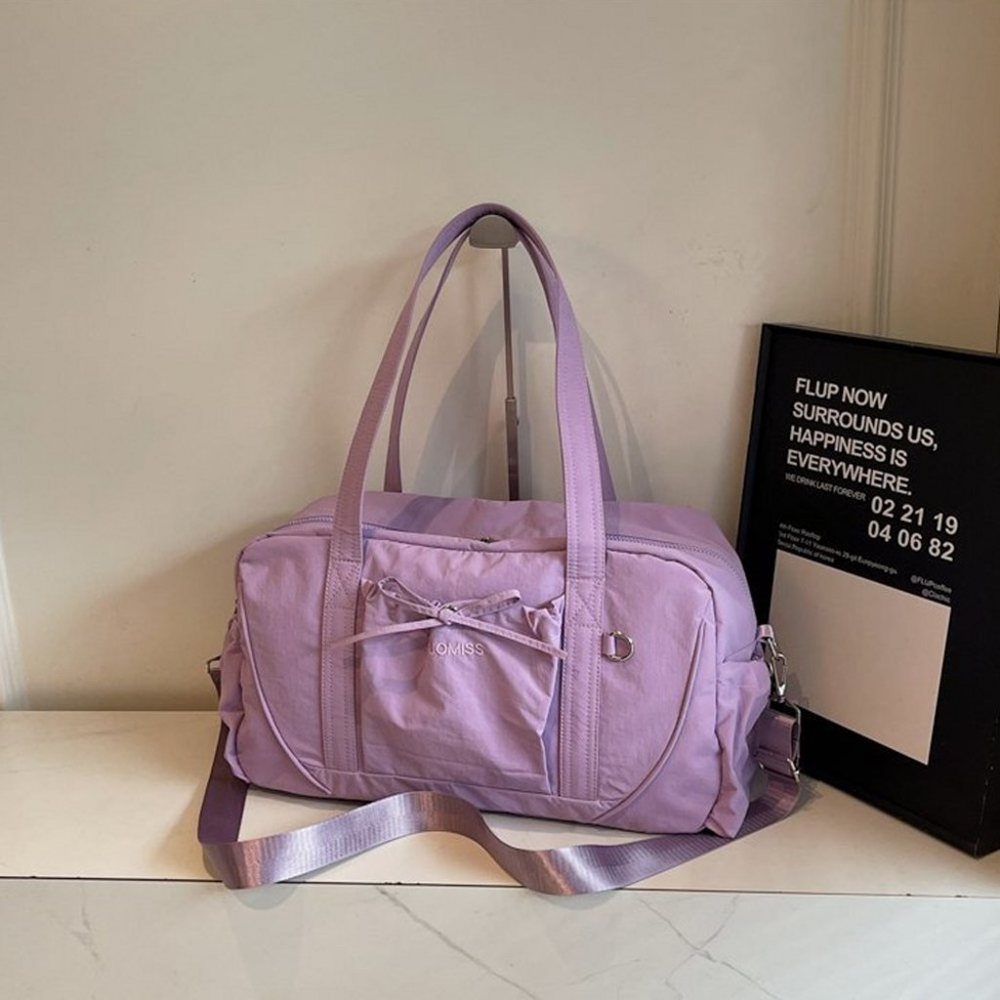
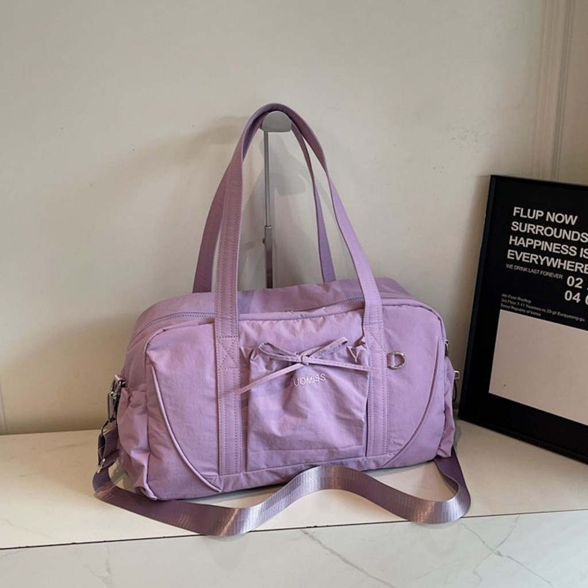
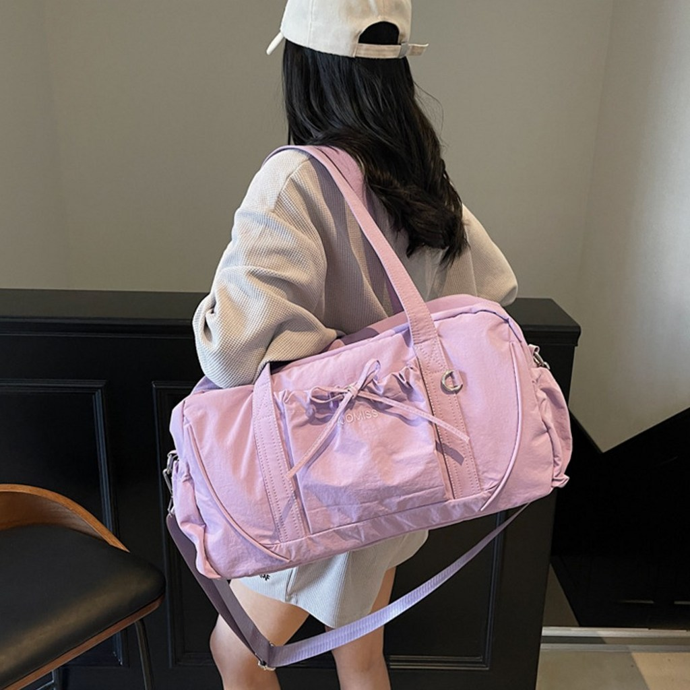
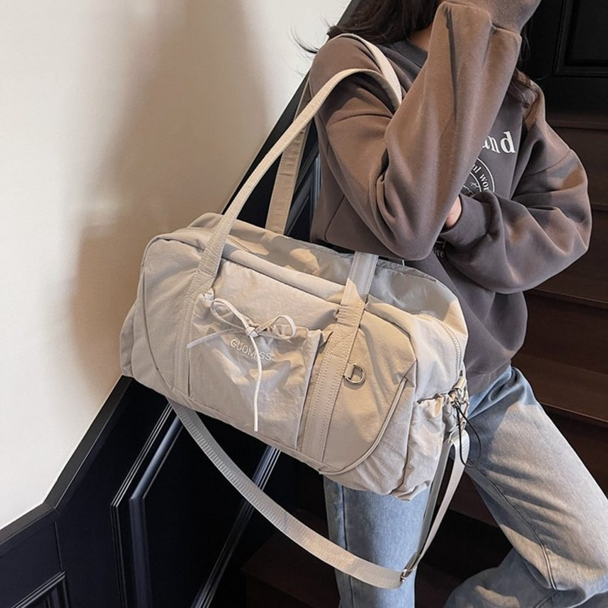
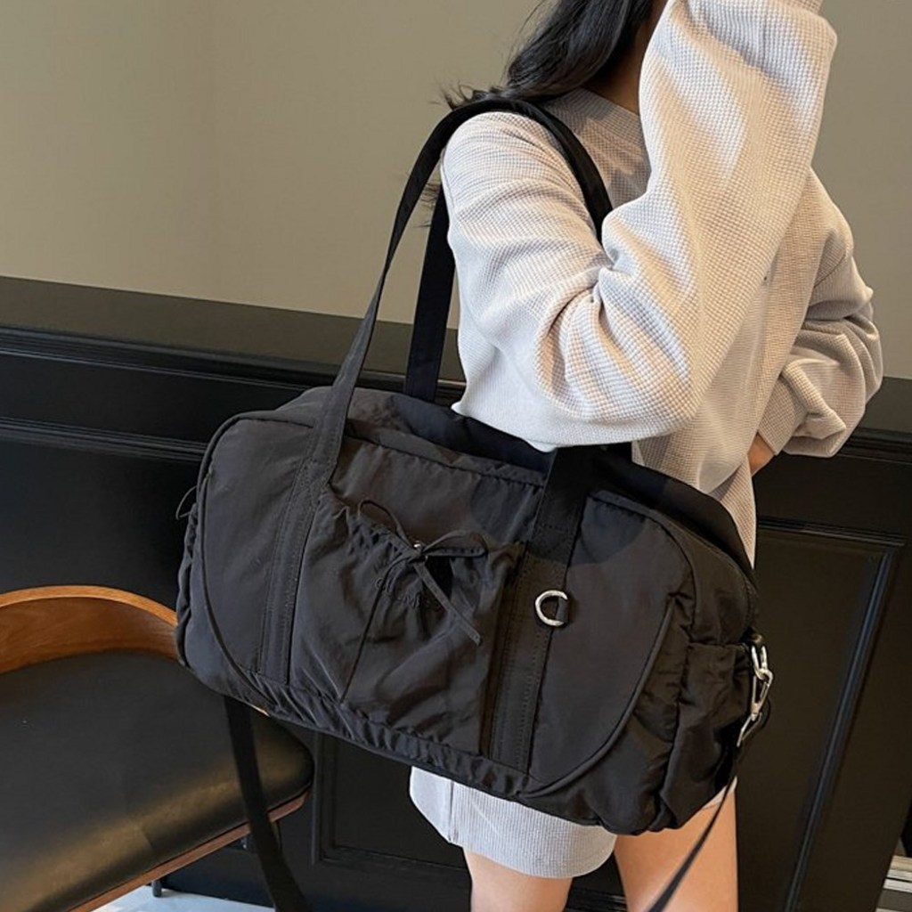
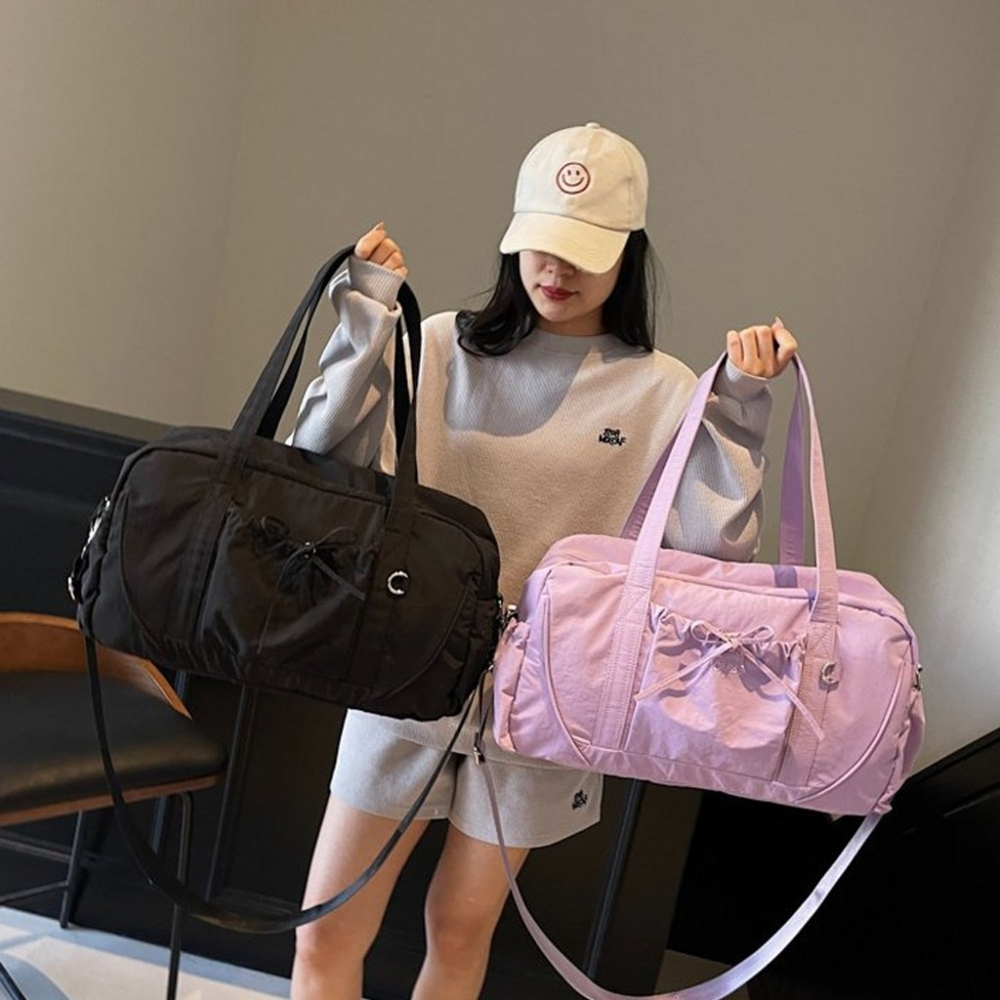

<meta charset="utf-8">
<title>1박2일 여행가방, 45cm면 충분하다 — 나의 투자 그리고 행복한 여행</title>
<meta name="description" content="젠핏 여행용 보스턴백 후기 — 45×26×17cm, 숄더 스트랩 겸용.">
<meta name="viewport" content="width=device-width, initial-scale=1">
<link rel="canonical" href="https://danielmoon82.github.io/moon/posts/zenfit-boston-bag.html">
<link rel="preconnect" href="https://fonts.googleapis.com">
<link rel="preconnect" href="https://fonts.gstatic.com" crossorigin>
<link rel="stylesheet" href="https://fonts.googleapis.com/css2?family=Hahmlet:wght@400;600;800&family=IBM+Plex+Mono:wght@400;500&family=IBM+Plex+Sans+KR:wght@300;400;500;600&display=swap">

<style>
  :root{
    --paper:#F2EEE6;--surface:#FAF8F3;--surface-2:#E7E1D5;
    --ink:#191510;--ink-2:#4A4235;--ink-3:#7D7364;
    --line:#D6CEBF;--line-soft:#E4DDD0;--accent:#B06A15;--accent-bright:#C2761A;
    --up:#E5484D;--down:#3B82F6;
    --f-display:"Hahmlet",'Nanum Myeongjo',"Apple SD Gothic Neo",serif;
    --f-body:"IBM Plex Sans KR","Apple SD Gothic Neo","Malgun Gothic",sans-serif;
    --f-mono:"IBM Plex Mono","SFMono-Regular",Consolas,monospace;
    --pad:clamp(20px,5vw,64px);
  }
  @media (prefers-color-scheme:dark){
    :root:not([data-theme="light"]){
      --paper:#0B1120;--surface:#121A2C;--surface-2:#1A2439;
      --ink:#E9EEF7;--ink-2:#A9B5C9;--ink-3:#72809A;
      --line:#26314A;--line-soft:#1D2739;--accent:#E8A33D;--accent-bright:#F0B45C;
    }
  }
  *{box-sizing:border-box;}
  body{margin:0;background:var(--paper);color:var(--ink);font-family:var(--f-body);
    font-weight:300;font-size:1rem;line-height:1.75;-webkit-font-smoothing:antialiased;}
  a{color:inherit;}
  img{max-width:100%;height:auto;}
  .wrap{max-width:760px;margin:0 auto;padding-inline:var(--pad);}
  .nav{position:sticky;top:0;z-index:20;background:color-mix(in srgb,var(--paper) 88%,transparent);
    backdrop-filter:saturate(180%) blur(12px);border-bottom:1px solid var(--line);}
  .nav-in{display:flex;align-items:center;justify-content:space-between;height:58px;}
  .brand{font-family:var(--f-display);font-weight:600;font-size:1rem;letter-spacing:-.02em;text-decoration:none;}
  .back{font-family:var(--f-mono);font-size:.72rem;color:var(--ink-3);text-decoration:none;}
  .article{padding-block:clamp(40px,7vw,72px) clamp(56px,9vw,96px);}
  .eyebrow{font-family:var(--f-mono);font-size:.68rem;letter-spacing:.16em;text-transform:uppercase;
    color:var(--accent);margin:0 0 14px;}
  h1{font-family:var(--f-display);font-weight:800;font-size:clamp(1.6rem,4.4vw,2.3rem);
    line-height:1.3;letter-spacing:-.03em;margin:0 0 16px;}
  .byline{font-family:var(--f-mono);font-size:.72rem;color:var(--ink-3);
    padding-bottom:24px;border-bottom:1px solid var(--line);margin-bottom:32px;}
  h2{font-family:var(--f-display);font-weight:600;font-size:1.25rem;letter-spacing:-.02em;margin:42px 0 14px;}
  h3{font-family:var(--f-display);font-weight:600;font-size:1.05rem;letter-spacing:-.02em;
    margin:30px 0 10px;padding-top:14px;border-top:1px solid var(--line-soft);}
  h3 .code{font-family:var(--f-mono);font-size:.7rem;font-weight:400;color:var(--ink-3);margin-left:6px;}
  p{margin:0 0 18px;color:var(--ink-2);}
  ul.checks{margin:0 0 18px;padding-left:20px;color:var(--ink-2);}
  ul.checks li{margin-bottom:8px;font-size:.94rem;}
  table{width:100%;border-collapse:collapse;font-size:.88rem;margin-bottom:8px;}
  th{font-family:var(--f-mono);font-size:.66rem;letter-spacing:.06em;text-transform:uppercase;
    color:var(--ink-3);text-align:right;padding:8px 6px;border-bottom:1px solid var(--line);}
  th:first-child{text-align:left;}
  td{padding:10px 6px;border-bottom:1px solid var(--line-soft);color:var(--ink-2);}
  td.num{font-family:var(--f-mono);text-align:right;font-variant-numeric:tabular-nums;}
  td.up{color:var(--up);} td.down{color:var(--down);}
  .scroll{overflow-x:auto;}
  figure{margin:22px 0;}
  figure img{display:block;border-radius:3px;background:var(--surface-2);}
  figcaption{margin-top:8px;font-family:var(--f-mono);font-size:.68rem;color:var(--ink-3);text-align:center;}
  .note{margin-top:34px;padding:16px 18px;border-left:3px solid var(--accent);
    background:var(--surface);border-radius:0 3px 3px 0;}
  .note p{margin:0;font-size:.85rem;color:var(--ink-3);}
  .foot{border-top:1px solid var(--line);background:var(--surface);padding-block:30px 38px;}
  .foot p{margin:0;font-size:.8rem;color:var(--ink-3);}
</style>

<nav class="nav">
  <div class="wrap nav-in">
    <a class="brand" href="../index.html">나의 투자 그리고 행복한 여행</a>
    <a class="back" href="../index.html#stocks">← 시황으로</a>
  </div>
</nav>

<main class="wrap article">
  <p class="eyebrow">Market</p>
  <h1>젠핏 여행용 보스턴백 — 스펙 정리</h1>
  <p class="byline">여행 · 2026-09-10 기준</p>

  <p>한 줄 요약: 가로 45cm(45×26×17cm) 폴리에스터 보스턴백. 숄더 스트랩으로 어깨·크로스 겸용, 색상 핑크·블랙·베이지. 2026년 9월 10일 기준 19,700원(정가 39,900원, 50% 할인), 상품평 113개, 무료배송.</p>
  <p>이 글은 쿠팡 상품페이지에서 직접 확인할 수 있는 값만 모아 정리한 기록입니다. 사용 후 내구성처럼 시간이 필요한 항목은 판단하지 않고 남겨 뒀습니다.</p>
  <div style="text-align:center;margin:30px 0"><a href="https://link.coupang.com/a/gVweEWaV52" target="_blank" rel="nofollow sponsored noopener" style="display:inline-block;padding:15px 28px;background:#E34948;color:#fff;font-weight:700;font-size:18px;text-decoration:none;border-radius:8px"><b>▶ 젠핏 보스턴백 상품 페이지 보기</b></a></div>
  <h2>1. 짧은 일정에 캐리어가 불편한 이유</h2>
  <figure><figcaption>가로 45cm 보스턴백 — 1박2일 기준 크기</figcaption></figure>
  <p>캐리어는 바퀴와 프레임 때문에 본체만 3~5kg입니다. 1박2일 짐이 3kg이면, 가방 무게가 짐보다 무거운 셈입니다.</p>
  <ul class="checks">
    <li>계단·에스컬레이터에서 들어야 한다 — 무게가 그대로 팔에 온다</li>
    <li>차 트렁크에 넣고 빼는 동작이 번거롭다</li>
    <li>숙소에서 펼칠 공간이 필요하다</li>
  </ul>
  <p>보스턴백은 이 세 가지가 다 없어집니다. 대신 바퀴가 없으니 짐이 많아지면 어깨가 아픕니다. 그래서 '며칠까지'가 이 가방의 유일한 기준입니다.</p>
  <h2>2. 크기 — 45 × 26 × 17cm가 실제로 얼마나 되나</h2>
  <figure><figcaption>본체 크기 45 × 26 × 17cm</figcaption></figure>
  <p>부피로 계산하면 약 20L, 실제 수납은 옆주머니와 늘어나는 부분까지 30L 안팎으로 봅니다.</p>
  <ul class="checks">
    <li>1박2일 — 넉넉하다. 옷 두 벌, 세면도구, 충전기, 얇은 겉옷</li>
    <li>2박3일 — 가능하다. 압축 파우치를 쓰면 편해진다</li>
    <li>3박 이상 — 무리다. 이때는 24인치 캐리어를 봐야 한다</li>
  </ul>
  <p>헬스장 용도로도 자주 쓰이는 크기입니다. 상품명에 '피트니스'가 붙은 이유입니다. 운동복 한 벌에 수건, 신발까지 들어갑니다.</p>
  <div class="note"><p>가방을 살 때 리터 수보다 가로 길이를 보는 편이 정확합니다. 40cm 아래는 하루, 45cm는 1~2박, 50cm를 넘으면 캐리어와 겹칩니다.</p></div>
  <h2>3. 메는 방식 — 손잡이와 숄더 스트랩</h2>
  <figure><figcaption>숄더 스트랩을 걸어 크로스로 멘 모습</figcaption></figure>
  <p>손잡이 두 개와 탈착식 숄더 스트랩이 있습니다. 어깨에 걸치거나 크로스로 멜 수 있습니다.</p>
  <p>짧은 일정에서 이게 생각보다 큽니다. 공항이나 역에서 표를 꺼내고 계단을 오르는 동안 양손이 비어 있는지가 편함을 좌우합니다.</p>
  <p>다만 스트랩이 얇은 웨빙이라, 짐을 무겁게 채우면 어깨에 파이는 느낌이 있을 수 있습니다. 두꺼운 패드가 달린 스트랩은 이 가격대에서는 기대하기 어렵습니다.</p>
  <h2>4. 소재와 색상</h2>
  <figure><figcaption>색상 구성 — 핑크와 블랙</figcaption></figure>
  <p>소재는 폴리에스터입니다. 가볍고 물에 잘 젖지 않으며, 접어서 보관할 수 있습니다. 대신 가죽처럼 형태가 잡히지는 않아, 짐을 덜 넣으면 옆이 접힙니다.</p>
  <figure><figcaption>베이지 색상</figcaption></figure>
  <p>색상은 핑크, 블랙, 베이지가 있습니다. 오래 쓸 생각이면 블랙이 관리가 편하고, 밝은 색은 바닥에 놓는 자리에 따라 자국이 남습니다.</p>
  <p>상품 표기상 사용대상은 여성용으로 분류돼 있지만, 형태 자체는 남녀 구분이 크지 않은 더플백입니다.</p>
  <h2>5. 가격과 구매 정보</h2>
  <figure><figcaption>가격 19,700원 (정가 39,900원, 50% 할인)</figcaption></figure>
  <ul class="checks">
    <li>가격 — 19,700원 (정가 39,900원, 50% 할인)</li>
    <li>상품평 — 113개</li>
    <li>배송 — 무료배송 (제주 3,000원, 도서산간 5,000원 추가)</li>
    <li>반품 — 고객 변심 시 6,000원</li>
  </ul>
  <p>가격은 2026년 9월 10일 기준입니다. 쿠팡 가격은 자주 바뀌니 구매 전에 확인하시는 게 좋습니다.</p>
  <h2>6. 이런 사람에게 맞고, 이런 사람에겐 안 맞는다</h2>
  <p>맞는 경우입니다.</p>
  <ul class="checks">
    <li>1박2일 국내 여행이 잦다</li>
    <li>헬스장이나 필라테스에 들고 갈 가방이 필요하다</li>
    <li>캐리어에 얹을 보조 가방을 찾는다</li>
    <li>2만원 선에서 실용적인 가방 하나면 충분하다</li>
  </ul>
  <p>안 맞는 경우입니다.</p>
  <ul class="checks">
    <li>3박 이상 일정이 많다 — 24인치 캐리어 쪽을 봐야 한다</li>
    <li>무거운 짐을 오래 메야 한다 — 얇은 웨빙 스트랩은 어깨에 부담이 온다</li>
    <li>가죽 마감이나 각 잡힌 형태를 원한다 — 이 가격대의 이야기가 아니다</li>
  </ul>
  <p>정리하면 이 가방의 값은 '짧은 일정에 딱 맞는 크기를 2만원 아래에서 산다'는 지점에 있습니다. 그 이상을 기대하면 실망하고, 그 선에서 보면 아깝지 않습니다.</p>
  <h2>7. 20초 영상으로 보기</h2>
  <div class="embed" style="position:relative;max-width:400px;margin:2rem auto;aspect-ratio:9/16"><iframe src="https://www.youtube.com/embed/ipZY_yPyOXQ" title="젠핏 보스턴백 20초 요약" style="position:absolute;inset:0;width:100%;height:100%;border:0;border-radius:12px" allow="accelerometer; autoplay; clipboard-write; encrypted-media; gyroscope; picture-in-picture" allowfullscreen loading="lazy"></iframe></div>
  <div style="text-align:center;margin:30px 0"><a href="https://youtube.com/shorts/ipZY_yPyOXQ" target="_blank" rel="nofollow sponsored noopener" style="display:inline-block;padding:15px 28px;background:#222;color:#fff;font-weight:700;font-size:18px;text-decoration:none;border-radius:8px"><b>▶ 유튜브에서 영상 보기</b></a></div>
  <p>크기·스트랩·색상 순서로 짧게 정리한 영상입니다.</p>
  <h2>마무리</h2>
  <p>여행 가방은 비싼 걸 사는 것보다 일정에 맞는 크기를 사는 게 남습니다.</p>
  <p>1박2일에 28인치를 끌고 나가면 짐이 아니라 고생을 들고 나가는 셈입니다. 반대로 3박에 45cm를 들고 가면 도착해서 옷을 사게 됩니다.</p>
  <div style="text-align:center;margin:30px 0"><a href="https://link.coupang.com/a/gVweEWaV52" target="_blank" rel="nofollow sponsored noopener" style="display:inline-block;padding:15px 28px;background:#E34948;color:#fff;font-weight:700;font-size:18px;text-decoration:none;border-radius:8px"><b>▶ 젠핏 보스턴백 상품 페이지 보기</b></a></div>
  <p style="font-size:12px;color:#999;line-height:1.6;margin-top:36px">쿠팡파트너스 활동으로 일정액의 수수료를 받을수있습니다</p>
</main>

<footer class="foot">
  <div class="wrap"><p>나의 투자 그리고 행복한 여행 · 투자 판단의 참고 자료일 뿐, 매수·매도를 권유하지 않습니다.</p></div>
</footer>
